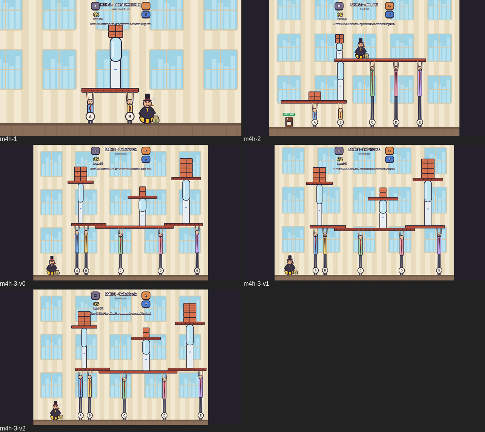

I QUIT! — M4, 3 рівні вручну
Збірка на рев'ю 11.11 23:50, коміт cee10a2 (гілка m4-hand), typecheck + test:fast зелені (80/80); раунд 4: важкий — Switchback (принцип c27 One Move Wrecker). Тап по працівнику — підсвітка того, що він тримає; другий тап — звільнити. Треба 100% і не зачепити KEEP SAFE. По 3 розкладки на рівень.
M4H-1 · Lean Toward Him легкийA deck on two people with a tower near one end; the boss stands past that end.
M4H-2 · The Post середнійThe boss's roof rests on three people and one water-cooler post; the post stands on a low deck over HR's coffee machine.
M4H-3 · Switchback важкийThree decks with towers; the boss waits far left. One quit on the right has to bring down the left side too.
Попередні 12 згенерованих рівнів: ../m4/
